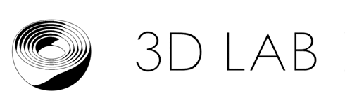

Dieser Browser unterstützt keine aktuelle javaScript-Version. Die Anwendung kann nicht ausgeführt werden.
| [W] | Bewegung nach vorne |
|---|---|
| [S] | Bewegung nach hinten |
| [A] | Bewegung nach links |
| [D] | Bewegung nach rechts |
| [R] | Bewegung nach oben |
| [F] | Bewegung nach unten |
| [Q] | Rotieren im Uhrzeigersinn |
| [E] | Rotieren gegen den Uhrzeigersinn |
| [↑] | Schwenk nach oben |
| [↓] | Schwenk nach unten |
| [→] | Schwenk nach rechts |
| [←] | Schwenk nach links |
| Mausrad | Bewegung nach vorne und hinten |
|---|---|
| Ziehen (Maustaste gedrückt) | Schwenk nach links und rechts |
| Zoom (mit zwei Fingern) | Bewegung nach vorne und hinten |
|---|---|
| Ziehen | Schwenk nach links und rechts |
Das gescannte Nest habe ich in Laos gefunden. Die kunstvollen Gebilde hängen wie riesige Früchte in Palmen oder Bäumen. Dieses Nest hing als Zierrat von der Decke eines Restaurants. Es stammt von einem Bajaweber (Ploceus philippinus) aus der Familie der Webervögel (Ploceidae).
Webervögel weben mit ihrem festen gebogenen Schnabel Grashalme zu einem dichten, stabilen und haltbaren Hohlraum, der kaum noch Tageslicht durchläßt. Im Flug, kopfüber, Loopings vollführend verwebt, verflechtet, wickelt und verknotet der pfiffige Webervogel die langen Grashalme.
* Der Vogel arbeitet ähnlich wie ein Korbflechter und zum Teil wirklich wie ein Weber. … Geschickt versteht er eine Faser durch ein Geflecht durchzustecken und daneben wieder herauszuziehen. Ist auf solche Weise eine feste Grundlage für die Form gegeben, so kann die Wand durch echtes Weben nach dem Prinzip von Kette und Schuss verdichtet und verfestigt werden, …
* Karl von Frisch: Tiere als Baumeister Frankfurt/M 1974, S. 217
Das Männchen beginnt mit dem Bau mehrerer kunstvoll gewebter Nester, die es dem Weibchen in unterschiedlichen Stadien der Fertigstellung präsentiert. Über die Kriterien nach denen die Vogelfrau das Nest auswählt streitet sich der Mensch noch. Ist ihr der sichere Neststandort wichtiger als eine außergewöhnliche Struktur oder geht es ihr um die Form des Nestes. Nachdem das Weibchen ein Nest ausgewählt hat, vollendet es den Innenausbau des Nests. Es wird 2-4 Eier darin ablegen und sie ca. 2 Wochen ausbrüten. Der Nachwuchs bleibt dann weitere 14-17 Tage in dem Nest, bis er in die Welt hinausfliegen.
Das gescannte Nest ist nicht fertiggestellt ihm fehlt die typische Einflugröhre, wodurch es in seiner Form an eine Boxershorts erinnert. Es ist eines der Nester, welches nicht bebrütet wurde, sondern dem Männchen zur Selbstdarstellung diente. Mir stellt sich die Frage, ob das Vogelmännchen die kunstvollen Nester nur aus instinktgeleitetem Nestbauverhalten anfertigt oder ob der Webervogel sich in den verschiedensten Nestformen immer wieder aufs Neue ausdrückt? Vielleicht einem Schmucktrieb folgend?
Eine Besonderheit entdeckten wir im Inneren des Nestes: eine Art Stein, der mit dem Laser des Scanners nicht durchleuchtet werden kann. Wir spekulierten beim Betrachten der Scanbilder, dass es ein hartes, vielleicht anorganisches Material sei. Was es genau ist liesse sich nur bestimmen, wenn man das Nest aufschneidet. Durch den Scan läßt sich die Größe, Struktur und Form bestimmen. Es könnte ein Klumpen Lehm sein, den der Vogel im Inneren des Nestes anbringt, um es vor starkem Wind zu schützen. Oder kühlt der feuchte Lehmklumpen, das warme Nestinnere ab und ist so eine Art Klimaanlage?

Die digitalen Reproduktionen des Webervogelnests wurden mithilfe eines Scans mit dem Mikro- Computertomographen des 3D-Labors des Instituts für Mathematik der TU Berlin erzeugt. Der Scan ermöglicht eine detaillierte Abbildung des Äußeren und des Inneren des Webervogelnests.
Anders als bei den in der Humanmedizin verwendeten Computertomographen, die um das Meßobjekt rotieren, wird bei den industriellen Mikro- Computertomographen das zu scannende Objekt in Bewegung versetzt. Durch diese Methode des Scans kann ein Modell von wesentlich höherer Qualität erzeugt werden. Zur Erstellung eines Scans wird die jeweilig zu untersuchende Probe im Strahlkegel zwischen Röntgenröhre und Detektor positioniert und während des Scanvorgangs um 360° gedreht. Der Röntgendetektor fängt die absorbierte Röntgenstrahlung hinter dem Objekt auf. Aus diesen Daten kann schließlich ein Modell erzeugt werden. Abhängig von der Position des Nests zwischen Röntgenstrahler- und Detektor, kann ein Scan in unterschiedlich hohen Auflösungen entstehen. Dabei entsteht ein Graustufenmodell, das auf Voxeln (Volumenpixeln) basiert. Die Volumenpixel legen fest, wo sich ein Punkt in einem Koordinatensystem, also im Raum, befindet. Das Webervogelnest ist deutlich großer als die normalerweise am 3D-Labor untersuchten Proben. Deshalb was es notwendig mehrere Scans durchzuführen, die im Verlauf der Rekonstruktion zusammengesetzt wurden. Einzelnen Rudimente der Trennung und des umgebenden Behälters des Nestes sind noch sichtbar.
Aufgrund dieses aufwändigen Verfahrens betrug die Größe des Volumendatensatzes schließlich 135 GB. Diese riesige Datenmenge lässt sich jedoch noch nicht auf dieser Webseite wiedergeben, da es dann unmöglich wäre ohne allzu große Verzögerung und Ruckeln durch das Nest zu navigieren.
Für das komplexe 3D-Modell des Webervogelnestes wurde auch eine Visualisierung für eine VR-Brille entwickelt, welche erstmals im Heidelberger Kunstverein in der Ausstellung Raumblüte gezeigt wurde und dann bei der ‚Langen Nacht der Wissenschaften‘ an der TU Berlin.
Milan Mehner (3D-Labor des Instituts für Mathematik / TU Berlin)
Tobias Still
Kerstin Stoll
Joachim Weinhold (3D-Labor des Instituts für Mathematik / TU Berlin)
